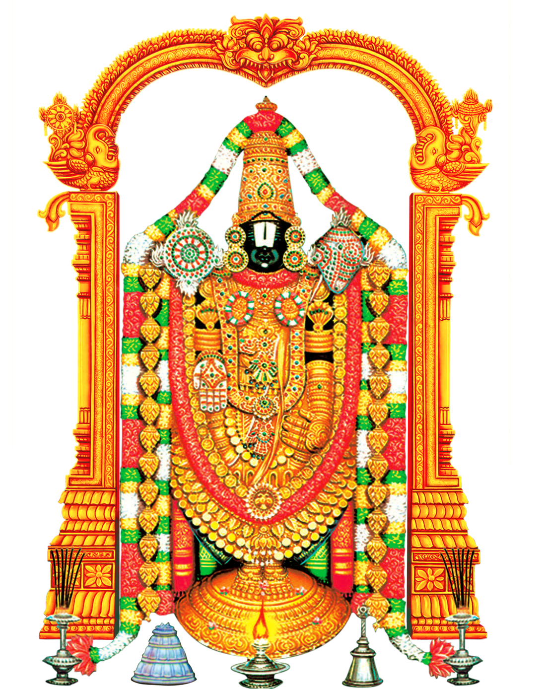

Venkateswara literally means, "Lord of Venkata".
Hindu God
Keep away troubles
Etymology Venkateswara literally means, "Lord of Venkata".[4][5] The word is a combination of the words Venkata (the name of a hill in Andhra Pradesh) and isvara ("Lord").[6] According to the Brahmanda and Bhavishyottara Puranas, the word "Venkata" means "destroyer of sins", deriving from the Sanskrit words vem (sins) and kata (power of immunity).[7] It is also said that 'Venkata' is a combination of two words: 'ven' (keeps away) and 'kata' (troubles). Venkata means he 'who keeps away troubles' or 'who takes away problems' or such terms in a similar context
Other Venkateswara temples India
- Venkateswara Temple, Dwaraka Tirumala, West Godavari District, Andhra Pradesh
- Sri Venkateswara Swamy Temple, Kurukshetra, Haryana
- Paduthirupathi Venkataramana Temple, Karkala, Karnataka
- Sri Venkataramana Temple, Carstreet, Mangalore, Karnataka, India